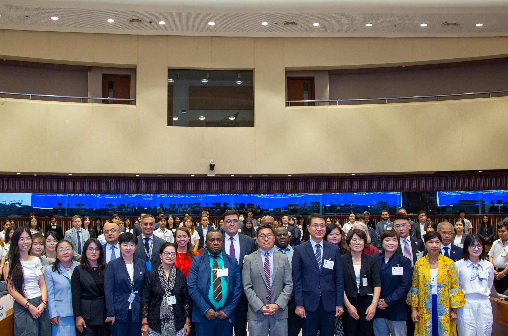
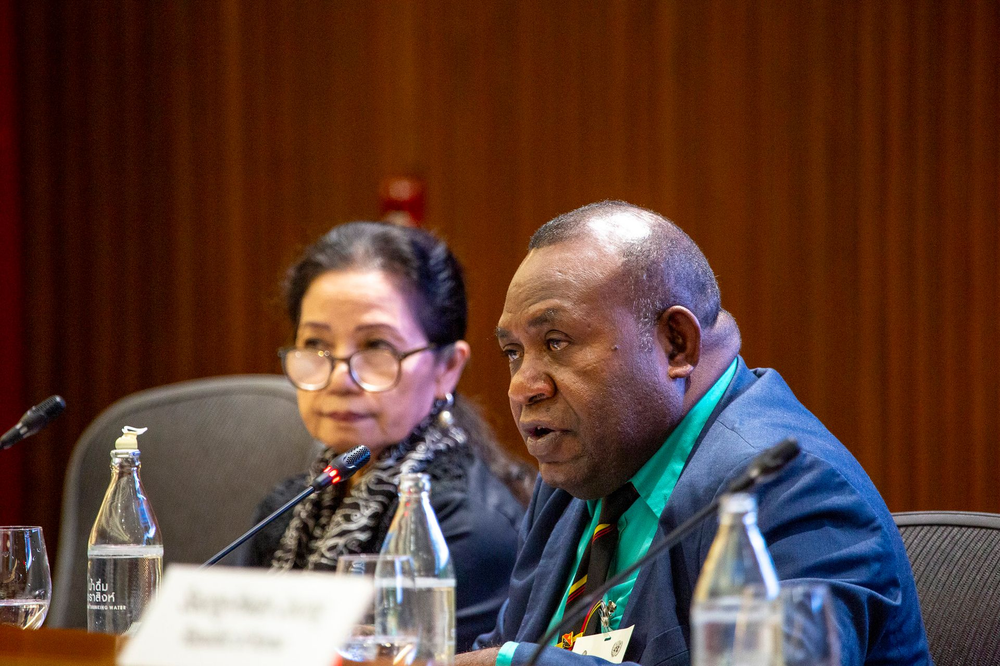
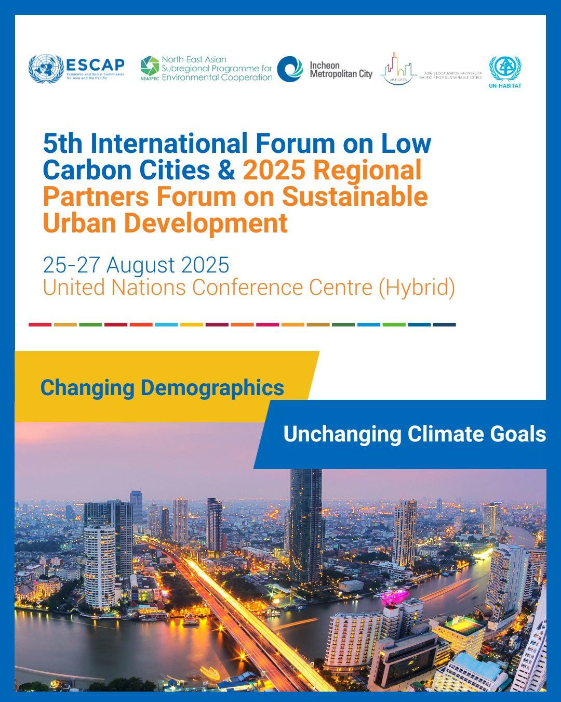
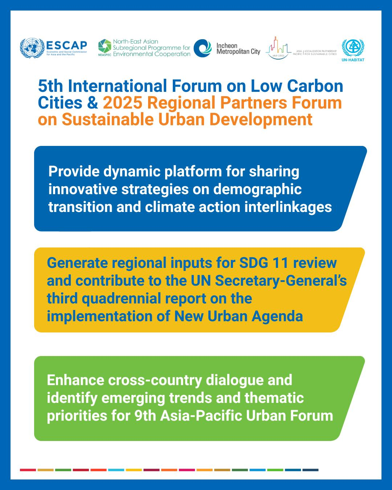

GYDA Representatives Join the 5th International Forum on Low-Carbon Cities & 2025 Regional Partners Forum in Bangkok

Location
United Nations Conference Centre (UNCC), Bangkok, Thailand
Date
August 25–27, 2025
Bangkok, Thailand — August 25–27, 2025 — The Global Youth Development Alliance (GYDA) participated in the 5th International Forum on Low-Carbon Cities (IFLCC) and the 2025 Regional Partners Forum (RPF) on Sustainable Urban Development, convened by the United Nations Economic and Social Commission for Asia and the Pacific (UN ESCAP) in partnership with UN-Habitat, NEASPEC, Incheon Metropolitan City, and regional networks. The hybrid forum gathered city leaders, policymakers, academics, and civil society to accelerate low-carbon city strategies, climate resilience, and SDG 11 implementation.
GYDA’s Contribution to the Regional Dialogue
As active participants, GYDA representatives engaged in scene-setting and thematic sessions on policy, technology, and partnerships—sharing youth-driven perspectives on human-centered, inclusive, and climate-resilient urban development. GYDA highlighted the need to:
- Empower grassroots innovation and entrepreneurship to deliver measurable urban climate action.
- Scale inclusive policies and financing frameworks that unlock youth-led SDG solutions.
- Leverage digital tools and AI responsibly to advance human rights and sustainable cities.

Key Themes and Takeaways
- Policy & Governance: Low-carbon urban futures in ageing and densifying societies; integrating risk-informed planning and multi-level governance.
- Innovation & Digital Transformation: Smart mobility, data platforms, and city-scale technologies for emissions monitoring and service optimization.
- Partnerships & Implementation: City-to-city learning, public-private collaboration, and regional networks to localize the New Urban Agenda.
- SDG 11 Progress: Advancing affordable housing, resilient infrastructure, and inclusive public spaces through Voluntary Local Reviews (VLRs) and national roadmaps.


Looking Ahead
Outcomes from Bangkok will inform the 2026 UN global reviews of SDG 11 and the New Urban Agenda, and shape priorities for the Ninth Asia-Pacific Urban Forum (APUF-9) in 2027. GYDA will continue collaborating with UN agencies, governments, and civil society to connect investment, innovation, and community impact—ensuring that rapid urbanization advances inclusive, low-carbon, and resilient cities.